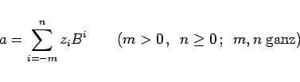
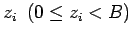
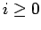
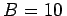
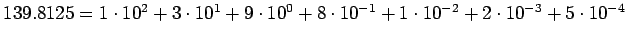
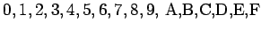

Inhalt Index DeskTop Bronstein

 Numerische Mathematik Nutzung von Computern Interne Zeichendarstellung Zahlensysteme
Numerische Mathematik Nutzung von Computern Interne Zeichendarstellung Zahlensysteme


Zahlen werden in Computern in mehreren aufeinanderfolgenden Bytes dargestellt. Basis für die interne Darstellung bildet das Dualsystem, welches, wie auch das Dezimalsystem, zu den polyadischen Zahlensystemen gehört.
Das Bildungsgesetz für polyadische Zahlensysteme lautet
|  | (19.254) |
mit B als Basis und  als zugelassene Ziffern des Zahlensystems. Die Ziffern mit  bilden den ganzen, die mit i < 0 den gebrochenen Teil der Zahl.
| Beispiel |
|
Die Dezimalzahldarstellung, d.h. , für die Dezimalzahl 139.8125 lautet . |
Im Zusammenhang mit der Nutzung von Computern sind die in der folgenden Tabelle aufgeführten Zahlensysteme gebräuchlich.
| Zahlensystem | Basis | zulässige Ziffern |
| Dualsystem | 2 | 0,1 (als Zeichen O,L) |
| Oktalsystem | 8 | 0,1,2,3,4,5,6,7 |
| Hexadezimalsystem (Sedezimalsystem) |
16 |  (Die Buchstaben A-F stehen für die Werte 10-15) |
| Dezimalsystem | 10 | 0,1,2,3,4,5,6,7,8,9 |